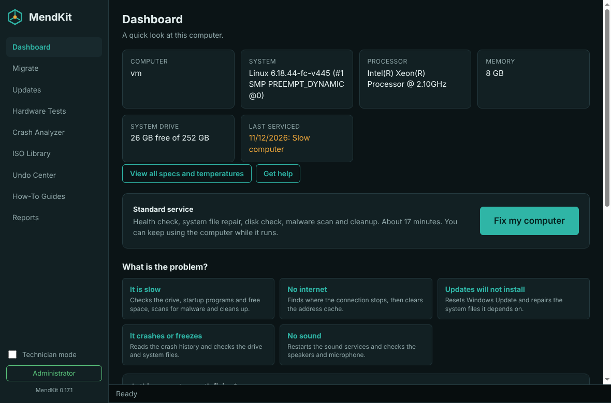
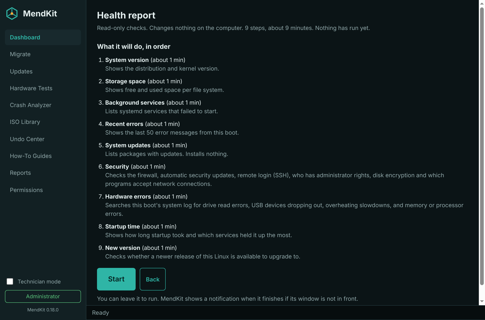
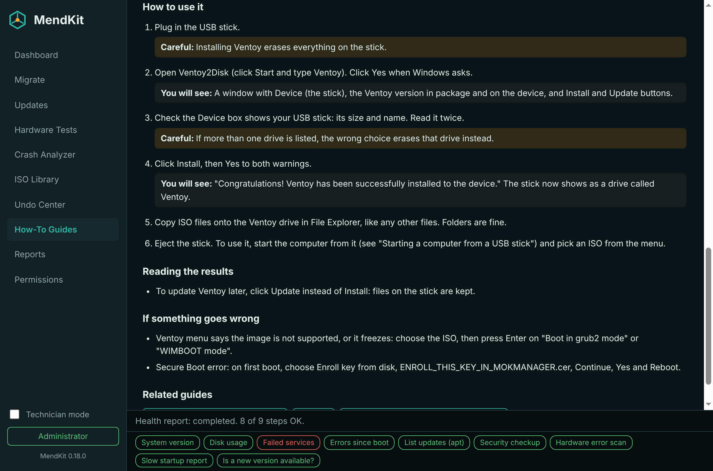

Fix, check and move computers, with every step explained.
MendKit is a free toolkit for Windows, Mac and Linux. Tell it what is wrong, and it runs the right checks and repairs, then reports what it found in plain language. Technicians get the full detail underneath.
Free, with no account, no ads and no tracking. Version 0.19.4.

Start with the problem, not the tool.
This is the question MendKit opens with. Pick a problem and a system to see the checks and repairs it runs, in order. Nothing runs until you have seen this list and pressed Start.
The jobs a repair bench does, in one app.
Everything below is built in. Each feature shows the systems it works on.
Diagnose and repair
Find out what is wrong and fix it, with a safety point saved first.
- Fix my computer
- A full service in one click: drive check, system file repair, disk check, malware scan and cleanup, in the right order.
- 17 everyday problems
- Slow, no internet, Wi-Fi dropping, printer, sound, Bluetooth, camera, updates failing, crashing and more, each with its own fix.
- Crash Analyzer
- Reads 30 days of crash records, explains blue screens and sudden shutdowns, names the likely cause and gives a repair plan.
- Network check
- Tests whichever connection is in use, cable or Wi-Fi, step by step, and shows exactly where it stops.
- Is it worth fixing?
- A keep, upgrade or replace verdict from the memory, drive, age, battery and Windows 11 readiness.
- Windows 11 upgrade
- Checks every requirement in plain words, fixes what a setting can fix, then starts Microsoft's own upgrade. Explains the choices when a computer cannot upgrade.
- Health over time
- A daily record of drive health, wear, free space, battery and crashes, with a warning when one is getting worse.
- Startup repair
- Reinstall Windows over itself keeping files and apps, or repair a Linux system that will not start, from a USB stick.
Clean up and secure
Free space, speed up startup, and clear out what scammers and adware leave behind.
- Remote access audit
- Finds 39 remote-control programs scammers use and shows where each one is. On Windows and Linux it removes the ones you pick.
- Startup items
- Everything that starts with the computer, who made it, and a tick box to turn it off or back on.
- Free up space
- Caches, old update files, old phone backups, the Trash and large files, measured first so you choose what goes.
- Security checkup
- Firewall, disk encryption, automatic security updates, remote login and other settings, with fixes for the ones that are off.
- Browser cleanup
- Unwanted extensions, sites allowed to show fake virus pop-ups, and settings forced in by adware, in Chrome, Edge, Brave, Vivaldi and Firefox.
- Drivers
- Finds hardware with no driver and installs the right one, including NVIDIA graphics and Broadcom Wi-Fi on Linux.
- Fix an app that will not open
- For apps macOS calls "damaged": clears the download block and can re-sign the app for that Mac.
Move and protect files
Get someone onto a new computer without losing anything.
- Move to a new computer
- Files, settings, bookmarks and the app list, over the home network, between any mix of Windows, Mac and Linux.
- Rescue files from a dead computer
- Connect the old drive, and MendKit finds each person's files and copies them across.
- Recover deleted files
- Looks in the Recycle Bin, Previous Versions, File History, Time Machine and Timeshift first, then searches the drive or memory card with PhotoRec and sorts what it finds.
- Phone photos and backups
- Copies photos and videos off an iPhone or Android phone by USB into a folder per month, and lists the iPhone backups on the computer.
- Backups
- Back up to an external drive now, or every week by itself, and restore on any computer.
- Backup image and secure erase
- A full image before a risky repair, and erasing files or whole drives so they cannot be recovered.
Test the hardware
Prove each part works before the computer goes back to its owner.
- Hands-on tests
- Keyboard, screen, speakers, microphone, camera and every USB port, each one a click away.
- Processor stress test
- Full load for a set time while temperatures are recorded, to catch overheating and instability.
- Drive health and battery
- Each drive's own health record and the battery's wear, with a warning when either is failing.
- Specs and temperatures
- Every component and live temperatures on one page.
Set up and maintain
Get a computer ready for its owner, and keep it that way.
- 61 free tools, installed for you
- Trusted programs from their official sources, each with a step-by-step guide. On Windows and Linux they can also be saved for computers with no internet.
- Settings you can undo
- 20 on Windows, 35 on Mac and 32 on Linux, for GNOME, Mint, KDE and XFCE. Each change records the old value so it can be put back exactly.
- Check-in and speed score
- Record who left the computer and why, measure its speed, and print a sheet showing the score before and after the work.
- Setup profiles
- A saved bundle of apps, tools and settings that sets up a new computer in one run.
- Updates in one place
- System, apps and drivers, plus a quiet monthly check that only speaks up when something needs attention.
For the technician
The extra detail and kit a repair shop needs.
- Technician USB
- A stick with MendKit that runs without installing, 31 rescue and installer images, and offline tool installers.
- Reports and logs
- Every run kept with its full output, a one-page customer report as PDF, and a job history to export.
- Undo Center
- Every setting MendKit changed and every tool it installed, with a button to put each back.
- Get help
- Emails the plain-language report to a technician the owner chooses. Nothing is sent until they press Send.
See it before it runs. Read it after.
Every job shows its steps first and ends with a result written for the person whose computer it is.





Simple for the owner. Detailed for the technician.
One switch at the bottom of the menu changes how much MendKit shows.
Simple mode
For anyone. Plain questions, big buttons and results a customer can read.
- Pick a problem, read the plan, press Start
- A one-page report with a health score
- Get help sends that report to someone you trust
Technician mode
For people who fix computers for a living, or who want to see everything.
- Every command, its live output and the full log
- Repair recipes, tools, settings, setup profiles and drive wiping
- A USB stick version that runs without installing
112 guides, written for people who do not fix computers.
Every guide says what to click, what you will see next, and where to be careful. They open inside MendKit, with a button that goes straight to the right screen or installs the tool, and they print for the bench.
- Start here: the words, passwords, Terminal and USB sticks8
- Using MendKit, one guide per screen24
- Mac and Linux repairs and upgrades13
- Every tool on the Tools screen61
Ventoy guide: How to use it
Make a USB stick that starts many rescue images
- Plug in the USB stick.Careful: Installing Ventoy erases everything on the stick.
- Open Ventoy2Disk and click Yes when Windows asks.You will see: a window with Device (the stick) and Install and Update buttons.
- Check the Device box shows your USB stick: its size and name. Read it twice.Careful: if more than one drive is listed, the wrong choice erases that drive instead.
- Click Install, then Yes to both warnings.Tip: to update Ventoy later, click Update instead: files on the stick are kept.
Windows 10 is out of support. The computer does not have to be.
Windows 10 stopped getting security updates in October 2025. For computers that cannot run Windows 11, MendKit walks through moving to Linux Mint, which looks and works much like Windows and gets updates for years.
- Check the computerMemory, graphics, Wi-Fi card and anything else Linux needs a step for, with a clear verdict.
- See what replaces each appEvery installed program, with what takes its place on Linux, so the owner decides before anything changes.
- Back up, make the USB stick, installEach stage is a button or a guide, screen by screen.
- Finish in one runUpdates, drivers, media codecs, Office-compatible fonts, printers and security settings, then the files and apps come back.
Careful with the computer in front of it.
A repair tool has a lot of power. These are the rules MendKit keeps.
- You see the steps first.Nothing runs until you press Start.
- Changes can be undone.Settings are recorded before they change, and a restore point or system snapshot is made before repairs.
- Files are never overwritten.When moving or restoring, a file with the same name is kept alongside, not replaced.
- Removed items are set aside.Programs and startup items MendKit removes go to a quarantine folder, and can be put back.
- Erasing asks you to type ERASE.The drive the computer runs from is never offered for wiping.
- No account and no tracking.It only checks for a newer version and whether the internet works. Passwords are never read or copied.
Download MendKit
Free for everyone. The card for your computer is highlighted.
Windows
Windows 10 or 11, 64-bit, including Windows on ARM.
Download for WindowsInstallerOr the portable version: one file that runs without installing.
How to install
- Open the file you downloaded.
- Windows may say it "protected your PC" because MendKit is new. Click More info, then Run anyway.
- Follow the installer, then open MendKit from the Start menu.
- For repairs, click Restart as administrator on the first screen.
Mac
Macs with Apple chips (M1 or newer). For an Intel Mac, use the Intel version below.
Download for MacDisk imageIntel Mac: the Intel disk image.
How to install
- Open the downloaded file and drag MendKit into Applications.
- Open MendKit. macOS stops it the first time because MendKit is not yet registered with Apple; click Done.
- Open System Settings, Privacy & Security, scroll down and click Open Anyway next to MendKit, then confirm.
- If macOS says MendKit "is damaged", open Terminal and run
xattr -cr /Applications/MendKit.app, then open it again. - The first time it opens, MendKit lists the permissions it needs, such as Full Disk Access, and opens the right settings page for each.
Linux
Ubuntu, Linux Mint, Debian, Fedora, openSUSE, Arch and others, 64-bit.
Download for LinuxUbuntu, Mint, Debian (.deb)Fedora or openSUSE: the .rpm package. Other distributions: the AppImage or the tar.gz archive.
How to install
- .deb (Ubuntu, Linux Mint, Debian, Pop!_OS, Zorin): double-click the file and click Install, or run
sudo apt install ./MendKit-*.deb. MendKit is then in the applications menu. - .rpm (Fedora, openSUSE): double-click it, or run
sudo dnf install ./MendKit-*.rpm. - AppImage: right-click it, Properties, allow running as a program, then double-click it. On Ubuntu 22.04 and later, AppImages need one extra package first:
sudo apt install libfuse2t64(libfuse2on 22.04).
The newest version. Installed copies check for updates by themselves. The Windows version has had the most real-world use; the Mac and Linux versions are newer.